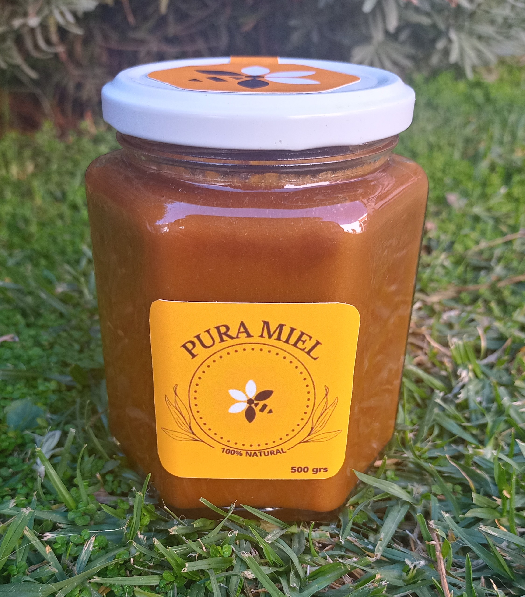
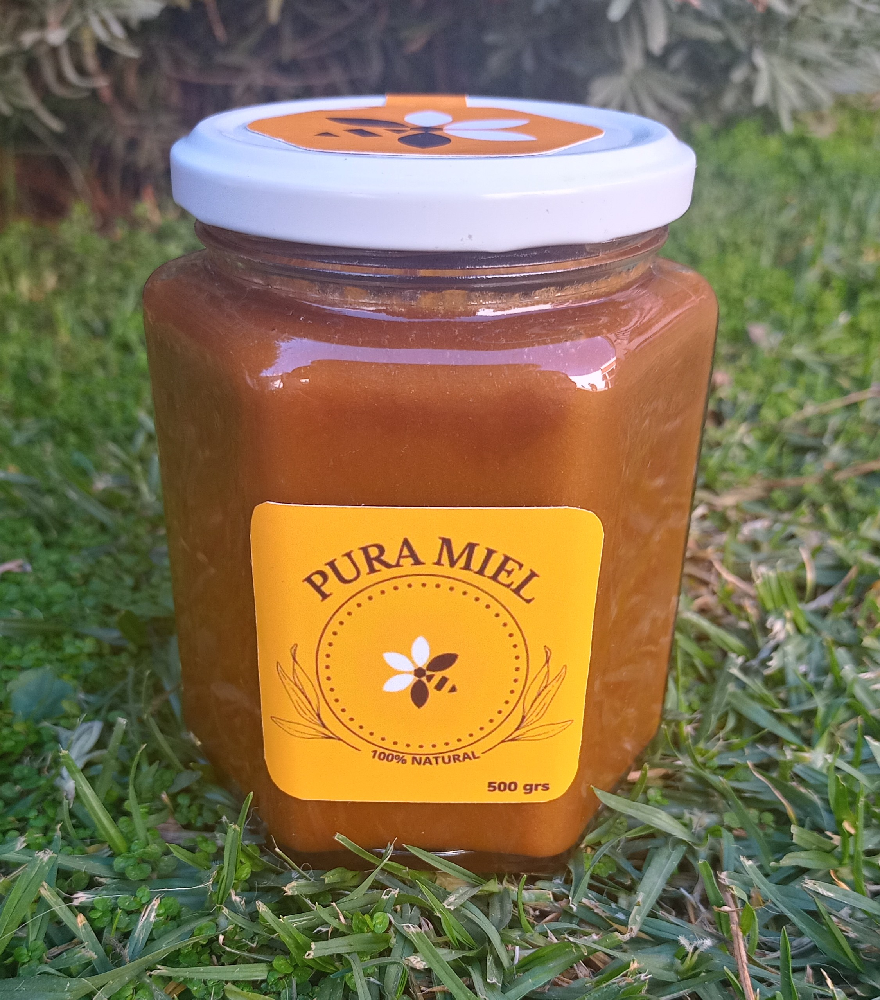
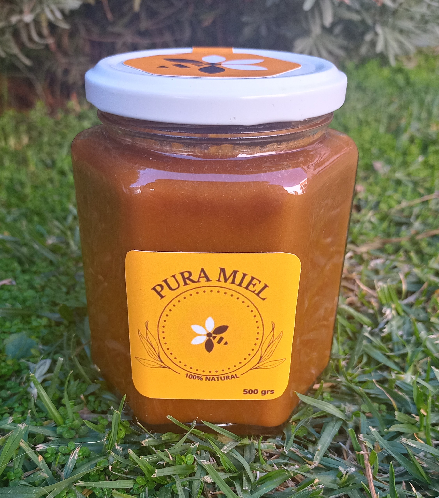
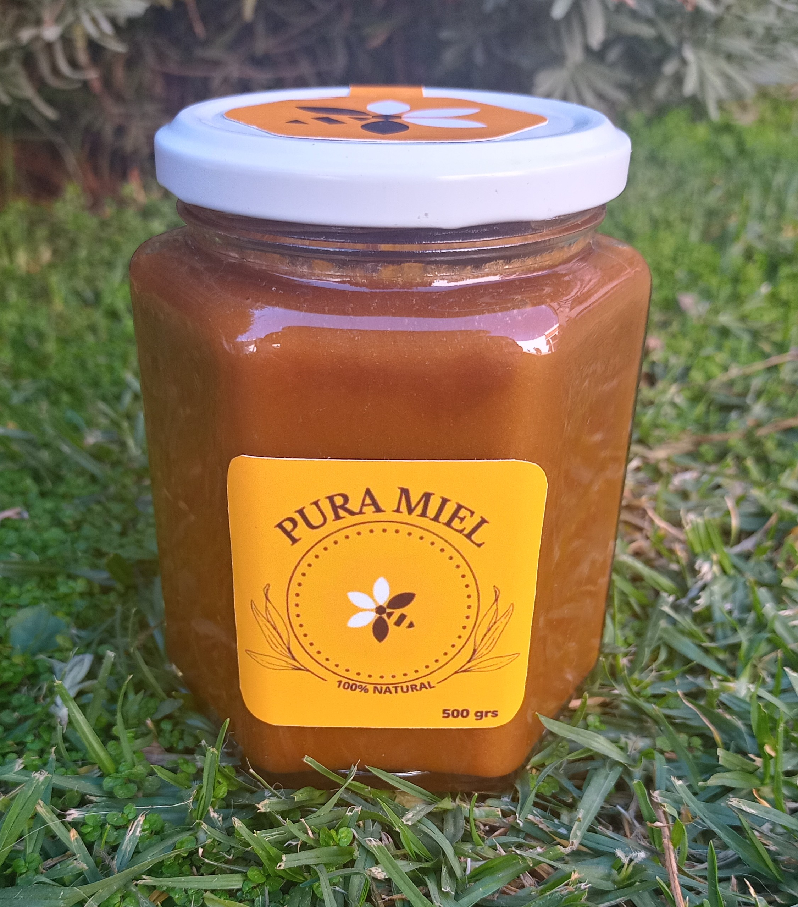

Una vez que nuestra miel es elaborada procedemos a extraerla de las colmenas
para llevarla a la sala de extracion, donde se le realiza un desoperculado a cada cuadro
y se introducen en un extractor de miel centrifugo donde se extrae la miel de los panales,
se filtra para separar impurezas como cera y otros,
luego se la coloca en tambores en donde se la deja decantar
para luego ser envasada.